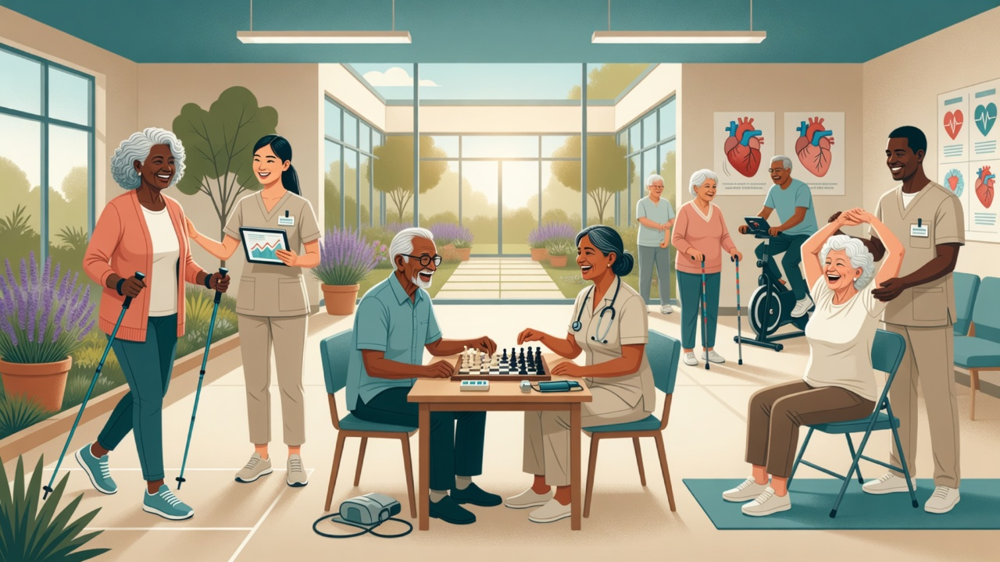

Gériatrie
5e édition · Collège National des Enseignants de Gériatrie · Pr Jacques Boddaert · Elsevier Masson 2021
Partie I — Connaissances
Partie II — Entraînement
Synthèses & Notebooks
Fiches synthèse · présentations PDF NotebookLM plein écran · codes ITEM EDN
Mode Révision
0 / 0
Tapez pour retourner
Favoris
Tableau de bord
Votre progression EVC
Fichier erreurs
Méthode PrEP EVC — transformer les ratés en points le jour J
Mode Examen
Simule un examen EVC avec timer par question et scoring multi-sources
Au lit du patient
Scores & calculateurs
56 outils gériatriques — saisissez, obtenez le score, l’interprétation et le lien vers le chapitre du manuel.
Pulse
Rappels courts · cas EVC · visuels · répétition espacée
Dictionnaire médical
Glossaire gériatrique — définitions, liens entre concepts et chapitres du manuel
Fiches de garde
Checklists express pour la nuit / SAU · distinctes des protocoles détaillés
10 situations urgentes (chute, delirium, douleur…). Pour le détail thérapeutique → onglet Protocoles.
Annales & cas cliniques
Entraînement style EVC — cas pédagogiques + sujets datés quand disponibles
Pas une base officielle CNG/CNCI exhaustive. Mélange de cas rédigés pour l’app (manuel CNEG) et de cas type EVC par année lorsque le module est chargé. Toujours croiser avec les sujets officiels.
Protocoles & traitements
Conduites cliniques de synthèse + médiathèque — pas un clone intégral des reco HAS
Synthèses pratiques (urgence, ATB, cardio, neuro…) inspirées des standards gériatriques. Les reco HAS ponctuelles existent en données annexes ; toujours vérifier la source HAS/ANSM officielle pour une décision critique.
Réglages
Taille du texte
18px
Interligne
1.7
Progression
0 chapitres lus
Favoris
Chapitres marqués
Fichier erreurs
Méthode PrEP / révision J+7
Bannière « Installer l’app »
Visible si proposée
Réinitialiser la progression
Effacer toutes les données
Vider le cache PWA
Sources & limites (honnêteté des contenus)
Manuel : Gériatrie 5e éd. (CNEG · Boddaert · Elsevier Masson 2021).
Flashcards / synthèses : dérivées du manuel + enrichissements pédagogiques.
Annales : cas d’entraînement style EVC + modules par année si chargés — pas l’intégralité des sujets officiels CNG.
Protocoles : synthèses cliniques pratiques (pas un export HAS). Vérifier HAS/ANSM pour les décisions critiques.
Garde : checklists express (≠ protocoles complets).
Scores : échelles usuelles (MMS, MNA, GDS, TUG, Braden, CAM…).
Flashcards / synthèses : dérivées du manuel + enrichissements pédagogiques.
Annales : cas d’entraînement style EVC + modules par année si chargés — pas l’intégralité des sujets officiels CNG.
Protocoles : synthèses cliniques pratiques (pas un export HAS). Vérifier HAS/ANSM pour les décisions critiques.
Garde : checklists express (≠ protocoles complets).
Scores : échelles usuelles (MMS, MNA, GDS, TUG, Braden, CAM…).